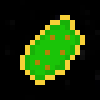
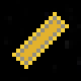

Items
Items can be purchased from the shop (bottom right). They grant the player permanent augmentations.
| Name | Description | |
|---|---|---|
| Steel Barrel |  | Gives player collision damage immunity while barrel rolling. |
| Plasma Blasts |  | Increases fire rate and damage. |
| Hazardous Reactor |  | Increases maximum speed. |
| Warp Thruster |  | Increases acceleration and deceleration. |
| Quadrupedal Tentaclover |  | Grants chance to critical hit. |
| Defense Satellite |  | Increases maximum defense. |
| Double Barrel |  | Grants double blasts. |
| Yithian Plague |  | Grants chance to poison. |
| Spice |  | Decreases barrel roll cooldown time. |
| Enhanced Plating |  | Increases maximum health by a factor. |
| Structure Reinforcement |  | Increases maximum health. |
| Blast Size Enhancer |  | Increases size of blasts. |
| Frequency Augmentor |  | Sharply increases fire rate of blasts at the cost of some damage. |